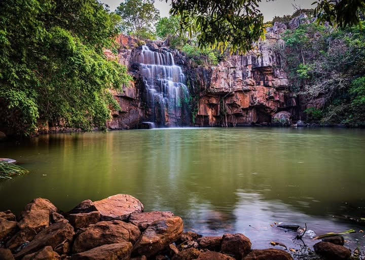
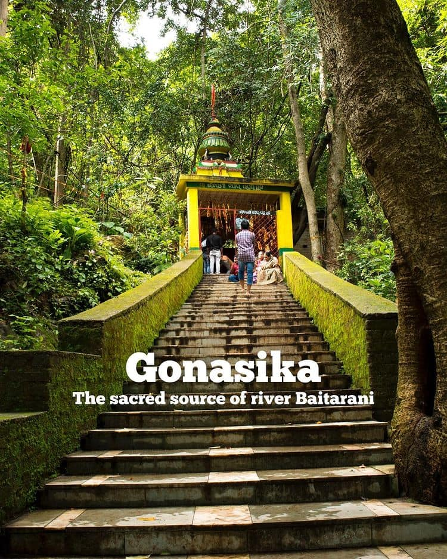
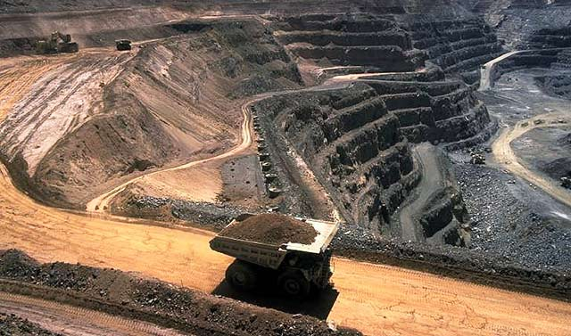

Beautiful Views of Keonjhar
This gallery shows the peaceful places, famous tourist attractions, cultural lifestyle, and natural environment that make Keonjhar a beautiful district of Odisha.

Sanaghagara Waterfall
Sanaghagara is a famous waterfall in Keonjhar, surrounded by green hills and peaceful nature.

Badaghagara Waterfall
Badaghagara is known for its beautiful flowing water, greenery, calm atmosphere, and scenic surroundings.

Khandadhar Waterfall
Khandadhar Waterfall is one of the highest waterfalls of Odisha and a major tourist attraction.

Murga Mahadev Temple
Murga Mahadev is a famous Shiva temple located among hills, trees, and peaceful natural beauty.

Gonasika
Gonasika is known as the origin place of the Baitarani River and is surrounded by hills and caves.

Tribal Culture
Tribal dance, music, dress, and customs give Keonjhar its rich and unique cultural identity.

Forests and Hills
Keonjhar is covered with forests, hills, rivers, and peaceful natural surroundings.

Mining Region
Keonjhar is rich in minerals, and mining is an important part of the district’s economy.